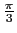

suivant: Factorisation des matrices
monter: Les isométries
précédent: Reconnaitre une isométrie :
Table des matières
Index
Trouver la matrice d'une isométrie : mkisom
mkisom a comme argument :
- En dimension 3, la liste des éléments caractéristiques (vecteur
directeur de l'axe et angle de la rotation ou vecteur de la normale au plan de
symétrie) et +1 ou -1 (+1 pour les isométries directes et
-1 pour les indirectes).
- En dimension 2, l'élément caractéristique (un angle ou un vecteur)
et +1 ou -1 (+1 pour les isométries directes et -1
pour les indirectes).
mkisom renvoie la matrice de l'isométrie définie par les arguments.
On tape :
mkisom([[-1,2,-1],pi],1)
On obtient la matrice d'une rotation d'axe [- 1, 2, - 1] et d'angle  :
:
[[-2/3,-2/3,1/3],[-2/3,1/3,-2/3],[1/3,-2/3,-2/3]]
On tape :
mkisom([pi],-1)
On obtient la matrice d'une symétrie par rapport à O :
[[-1,0,0],[0,-1,0],[0,0,-1]]
On tape :
mkisom([1,1,1],-1)
On obtient la matrice d'une symétrie par rapport au plan x + y + z = 0 :
[[1/3,-2/3,-2/3],[-2/3,1/3,-2/3],[-2/3,-2/3,1/3]]
On tape :
mkisom([[1,1,1],pi/3],-1)
On obtient la matrice produit d'une rotation d'axe [1, 1, 1] et d'angle
 et d'une symétrie par rapport au plan x + y + z = 0:
[[0,-1,0],[0,0,-1],[-1,0,0]]
On tape :
mkisom(pi/2,1)
On obtient la matrice en dimension 2, de la rotation plane d'angle
 :
:
[[0,-1],[1,0]]
On tape :
mkisom([1,2],-1)
On obtient la matrice en dimension 2, de la symétrie plane par rapport à la droite d'équation x + 2y = 0 :
[[3/5,-4/5],[-4/5,-3/5]]
suivant: Factorisation des matrices
monter: Les isométries
précédent: Reconnaitre une isométrie :
Table des matières
Index
Documentation de giac écrite par Renée De Graeve